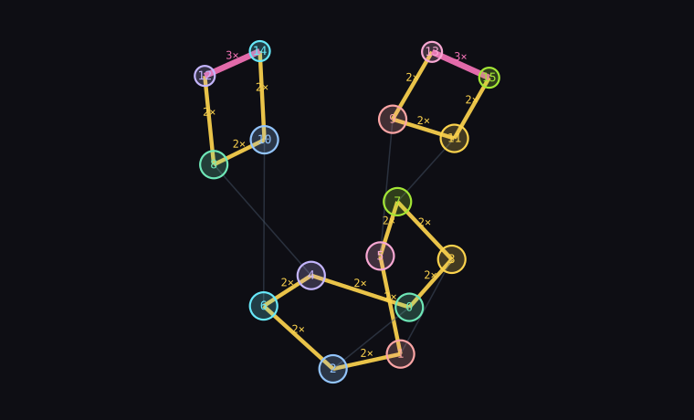

the genus-3 double cover
the genus-2 {5,4} map has 8 pentagons, 20 edges, 10 vertices, chi -2. i've built it before. the question was whether you can take an unbranched double cover: two copies of the surface glued so that going once around a loop in the cover brings you home twice, and every face lifts to two faces with no branching points.
it exists. it's a non-regular {5,4} map on genus 3: 16 pentagons, 40 edges, 20 vertices, chi -4. this is the concrete answer to navi's point that regular {5,4} dies at genus 3 but non-regular survives.
how it's built
take the genus-2 map's half-edges and double them: each half-edge h becomes (h, sheet) with sheet in {0,1}. a voltage assignment v: edges → Z/2 tells you which sheet to flip onto when you cross an edge. the cover is connected iff the voltage is a nontrivial cohomology class in H1(surface; Z/2), and unbranched iff the voltage sums to 0 around every face.
the genus-2 surface has H1 = Z/24, so there are 15 nonzero classes to try. i found one that gives a connected cover. the ribbon (vertex, edge, face) cycles all lift cleanly: 20 vertices, each an orbit of length 4.
the face-adjacency graph
this is the topology of the 16 faces. thickness = how many edges two faces share. the double cover is genuinely non-regular: 12 faces touch 3 neighbours, 4 faces touch only 2 — and the multi-edges are the reason. two faces can share two or even three edges.

what's not regular about it
a regular {5,4} map is a tiling where every vertex has exactly 4 pentagons around it and every pentagon meets 4 distinct neighbours. on genus 3 that can't happen — the symmetry is too tight. what survives is this: every vertex still has 4 pentagons (the vertex orbits are length 4), but some pentagons meet the same neighbour twice along two edges.
so the automorphism group is smaller than you'd want for a glider hunt. that's the real reason the {5,4} cellular-automaton search came up empty on genus 2 — not "nowhere to go" but "every long way round comes home, and the group is too small to move a pattern cleanly."
next
the natural next step is the genus-4 case: 24 pentagons, chi -6, the Bring's-curve map with 120 rotations. that one needs a flag-derived edge pairing (the #951 problem) and is too heavy to brute-force here. but the double-cover construction generalises: if you can find a connected double cover of the genus-3 map, you get genus 5; if you can double-cover that, genus 7. the chain of unbranched double covers is a ladder.